编译原理
编译原理 第一讲 导论、词法分析
一、编译器简介
1.编译器：一个程序，将一种语言（源程序）翻译为另一种语言（目标程序）。
- 复杂的程序
- 在许多计算形式中都有使用
- 命令解释器(command interpreter)
- 界面程序(interface program)
2.课程目的
- 研究下列内容，以将编程语言翻译为可执行代码：
- 技术
- 数据结构
- 算法
3.两个重要的概念
- 阶段(Phase)：一个或多个部件，在编译过程中处理不同的中间表示语言。
- 接口(Interface)：描述编译器部件之间交换的信息。
二、典型编译器架构
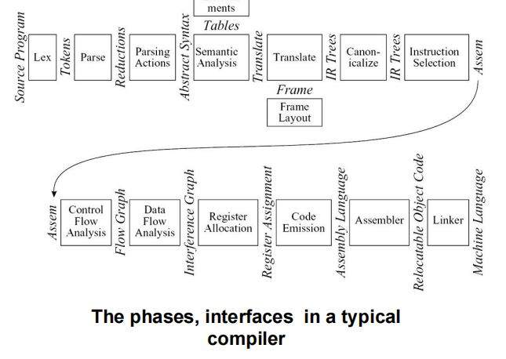
Lex——词法分析器/扫描器(scanner)- 将源程序（流）分解为独立的单词(
token)。 - 单词：不可分割的单元。
- 将源程序（流）分解为独立的单词(
Parse——语法分析- 分析程序的语法结构。
- 将
token构建为Reductions。
Parsing Actions——语法分析动作- 对于每个词组(
phrase)，形成一棵抽象语法树(AST, Abstract Syntax Tree)
- 对于每个词组(
Semantic Analysis——语义分析Translate——转换- 判定每个词组(
phrase)的含义 - 检查表达式的类型（类型匹配、类型检查）
- 申请翻译各个词组
- 判定每个词组(
Frame Layout- 依赖于目标机器的架构，将变量、函数参数等放入活动记录(
activation records) - 如：函数
A调用函数B，就会创建B的调用记录。
- 依赖于目标机器的架构，将变量、函数参数等放入活动记录(
Translate——转换/翻译- 产生中间表示树(
IR Trees, Intermediate Representation Trees)
- 产生中间表示树(
Canonicalize——标准化- 按照某些规则，对中间表示树进行整理与规范。
- 提升表达式的副作用
- 清除条件分支，为后续阶段提供方便。
Instruction Selection——指令选择- 根据目标机器指令，将
IR-tree结点分组为集群(clump)。
- 根据目标机器指令，将
Control FLow Analysis——控制流分析- 分析指令流，形成控制流图。
Data Flow Analysis——数据流分析- 涉及变量的值传递关系
- 如变量在运行时数值不变，则将其转化为常量。
- 活性分析：判断变量是否仍然需要保留，何时其空间可以重用。
Register Allocation——寄存器分配- 涉及资源分配，选择寄存器以存放变量和临时值(
temporary value)。 - 临时变量：在编译器处理代码时产生，与变量地位同等，但程序员不可见。
- 若两个变量不同时存活，则可共享同一个寄存器。
- 经典算法：图染色算法。
- 涉及资源分配，选择寄存器以存放变量和临时值(
Code Emission——代码生成- 将机器指令中的(
temporary name)替换为机器寄存器。
- 将机器指令中的(
Assembler——汇编器- 形成目标代码
-
Linker——链接器- 形成可执行代码
-
（可选择部件）源语言级优化
-
不依赖于目标机器架构，优化源语言的时间和空间。
-
举例：常量传播
- 变量、常量处理代价不同
- （可选择部件）目标级代码优化
- 说明
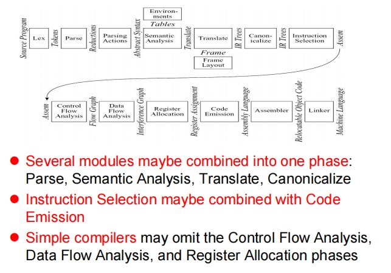
三、数据结构
1.数据结构
2.一组函数：翻译(translate)接口。
3.由语法分析器调用的函数：单词(token)接口。
四、工具与软件
1.最常用的抽象表示
- 上下文无关文法(CFG)：用于语法分析。
- 正则表达式(Regular Expression)：用于词法分析。
2.两个用于编译的工具
- Lex：词法分析器
- Yacc：语法分析器
五、树语言的数据结构
【例1】表达式文法描述
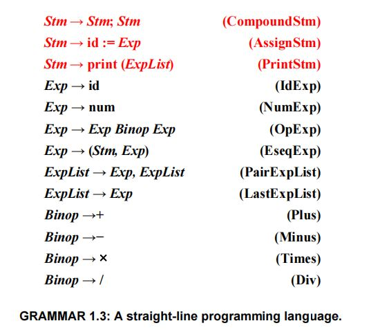
- 左侧：单个符号
- 右侧：零个/一个/多个符号。
【例2】求程序执行结果
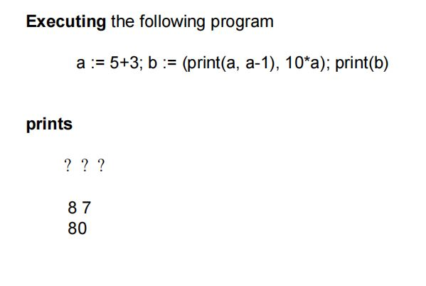
【例3】语法分析树
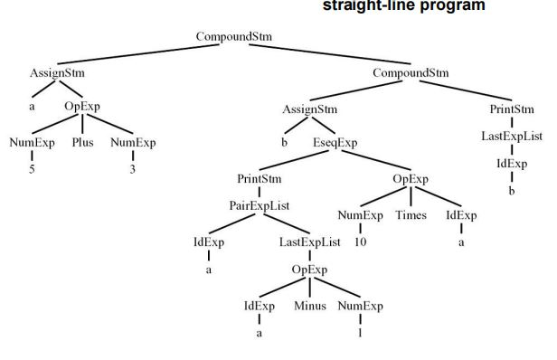
- 叶子结点对应于程序中出现的常量、变量符号，称为终结符(terminal)。
- 非叶子结点，称为非终结符(non-terminal)。
1.文法符号的类型绑定
- 每个文法符号，均有一个类型的捆绑。
2.树语言的数据结构定义
Typedef char *string;
Typedef struct A_stm_ *A_stm;
Typedef struct A_exp_ *A_exp;
Typedef struct A_expList_ *A_expList
Typedef enum {A_plus, A_Minus, A_times, A_div} A_binop
Struct A_stm_ { enum {A_compoundStm, A_assignStm, A_printStm} Kind
union { struct {A_stm stm1, stm2;} compound;
struct {string id; A_exp exp;} assign;
struct {A_expList exps;} print;
} u;
}
A_stm A_CompoundStm(A_stm stm1, A_stm stm2);
A_stm A_AssignStm(string id, A_exp exp);
A_stm A_PrintStm(A_expList exps);
3.构造器
4.复合语句构造函数
- 申请空间、数据结构初始化
- CompoundStm, AssignStm
A-stm A_CompoundStm(A_stm stm1, A_stm stm2){
A_stm s = checked_malloc(sizeof(*s));
s->kind = A_compoundStm;
s->u.compound.stm1=stm1;
s->u.compound.stm2=stm2;
return s;
}
5.双目运算符构造
六、词法分析(Lexical Analysis)简介
1.编译过程
- 前端：分析（机器无关）
- 后端：生成（机器相关）
[注]现代编译器有中端（middle end）组件。
2.分析过程
- 词法分析：将字符流转化为单词序列。
- 输入字符流
- 输出单词流
- 丢弃空白符和注释
- 语法分析：对程序的词组结构进行语法分析。
- 语义分析：分析程序的意义。
七、Token
1.定义
- 字符序列
- 编程语言语法的最基本单元
2.分类
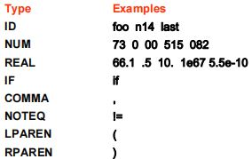
- ID：变量
- 整数、实数
- 关键字/保留字(reserved word)
- 非token：注释、预处理命令、宏、空白符等。
【例3】Token生成
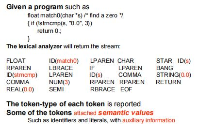
- 一部分token具有词义(semantic value)。
八、正则表达式
1.最长匹配原则
2.规则优先级
第二讲 词法分析、语法分析
一、确定型有穷自动机
1.基本概念
(1)Regular expressions: Convenient for specifying lexical tokens.
(2)Needing a formalism: Implemented as a computer program, using finite automata (N.B. the singular of
automata is automaton).
(3)A finite automaton: A finite set of states; edges lead from one state to another, and each edge is labeled with a symbol. One state is the start state, and certain of the states are distinguished as final states.
2.常见有穷自动机
下列自动机分别用于识别：if关键字、变量名(ID)、整数(NUM)、实数(REAL)、空白符(white space)、错误(error)。
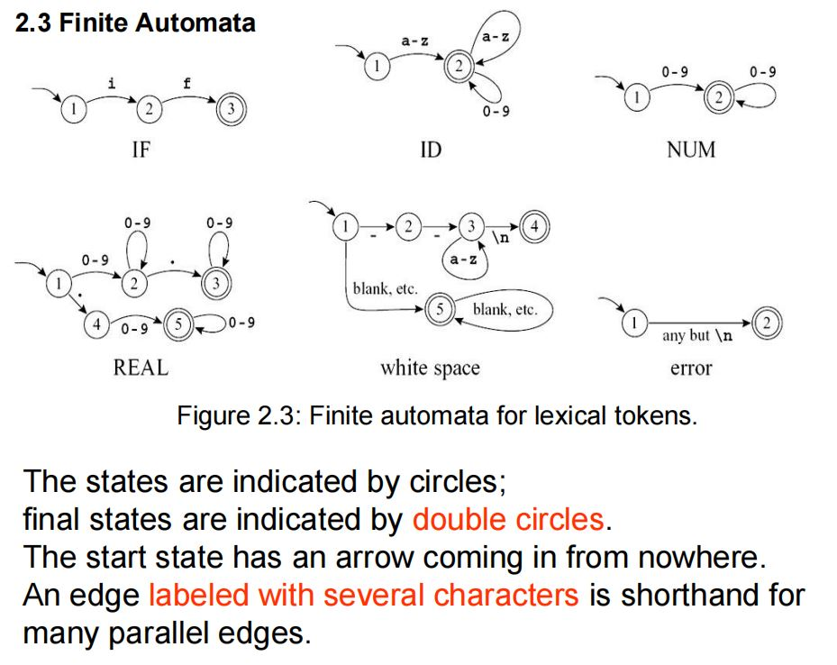
3.确定型有穷自动机
In a deterministic finite automaton (DFA), no two
edges leaving from the same state are labeled with
the same symbol.
A DFA accepts or rejects a string as follows.
(1)Starting in the start state, for each character in the input string the
automaton follows exactly one edge to get to the next state.
(2)The edge must be labeled with the input character.
(3)After making n transitions for an n-character string, if the automaton is in a final state, then it accepts the string.
(4)If it is not in a final state, or if at some point there was no appropriately labeled edge to follow, it rejects. The language recognized by an automaton is the set of strings that it accepts.
4.有穷自动机的合并
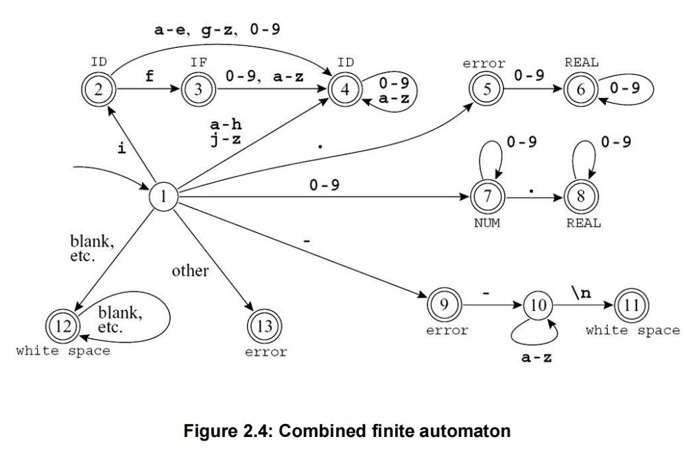
5.歧义消除
（1）规则优先级(rule priority)
（2）最长匹配原则(longest match)
6.转移函数的实现——转移矩阵
·各状态作为行、列索引，形成转移表。
·表格元素表示：状态转移时读入的字符。
7.死状态(dead state)
·没有转移输出的非终止状态。
8.词法分析举例（对应于图2.4中的DFA）
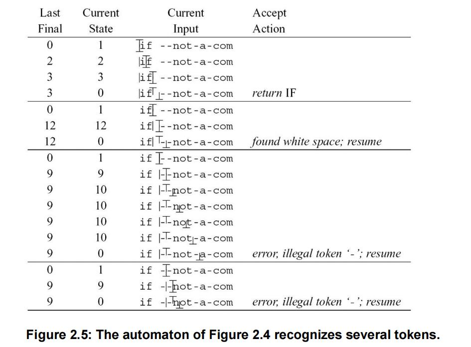
二、非确定型有穷自动机
1.正则表达式表达为NFA
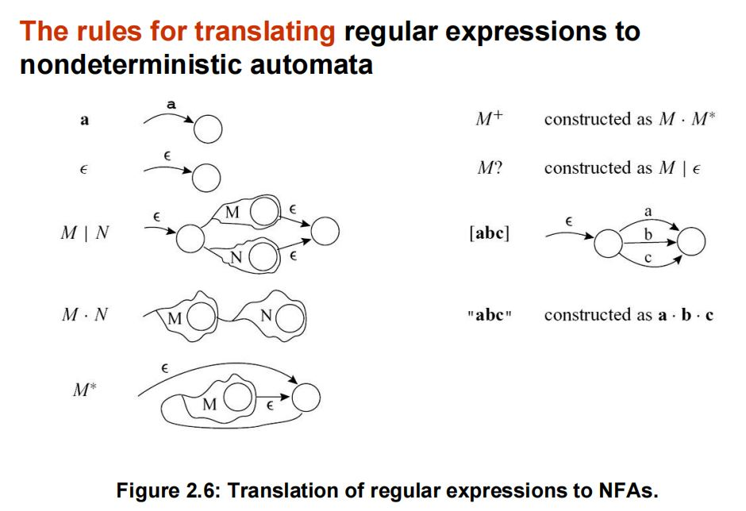
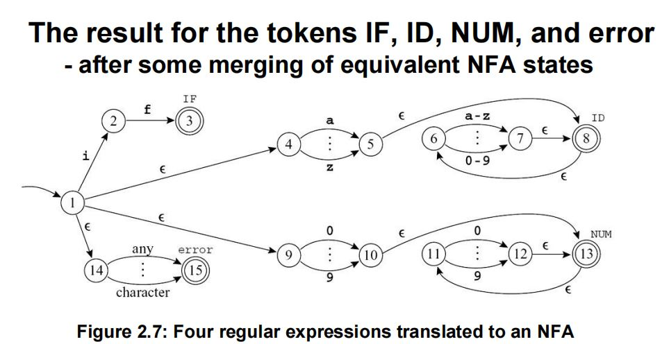
2.子集构造法(subset construction)——将NFA转化为DFA
（1）\(\epsilon\)转移：计算当前状态的\(\epsilon\)闭包（即：经若干次\(\epsilon\)移动可以到达的所有状态），将\(\epsilon\)闭包作为一个新的状态。
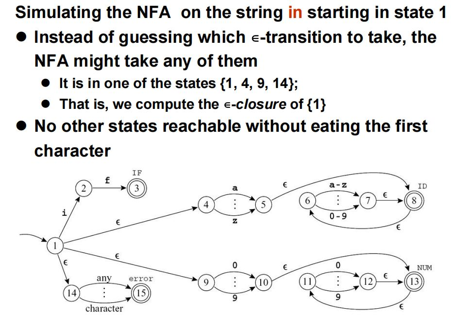
（2）字符\(i\)的转移：计算读入\(i\)（读\(i\)前后可能分别经过若干次\(\epsilon\)移动），可能到达的所有状态。
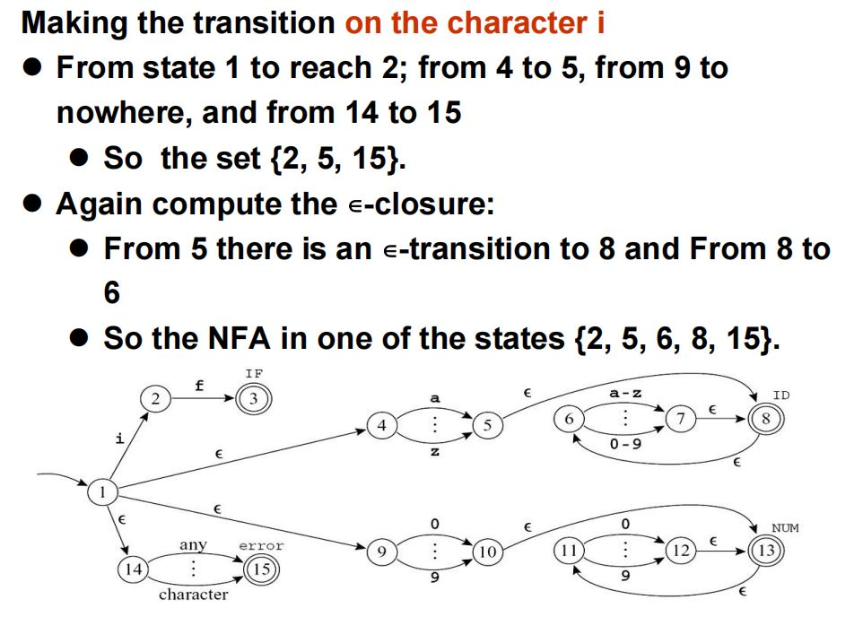
3.\(\epsilon\)-闭包的严格定义
(1)Let edge(s, c) be the set of all NFA states reachable by following a single edge with label c from state s.
(2)For a set of states S, closure(S) is the set of states that can be reached from a state in S without consuming any of the input, that is, by going only through ∊-edges. Mathematically, express the idea of going through \(\epsilon\)-edges by saying that closure(S) is the smallest set T, such that：
\(T = S \cup (\cup_{s \in T}edge(s, \epsilon))\)
4.DFA对NFA的模拟流程
·假设\(d = \{s_i;s_k;s_l\}\)是NFA中的状态\(s_i, s_k, s_l\)。
·从\(d\)开始，读入字符\(c\)。
·到达一个由一组NFA状态组成的新DFA状态\(DFAedge(d, c)\)。
·\(DFAedge(d, c) = closure(\cup_{s\in d}edge(s, \epsilon))\)
·举例
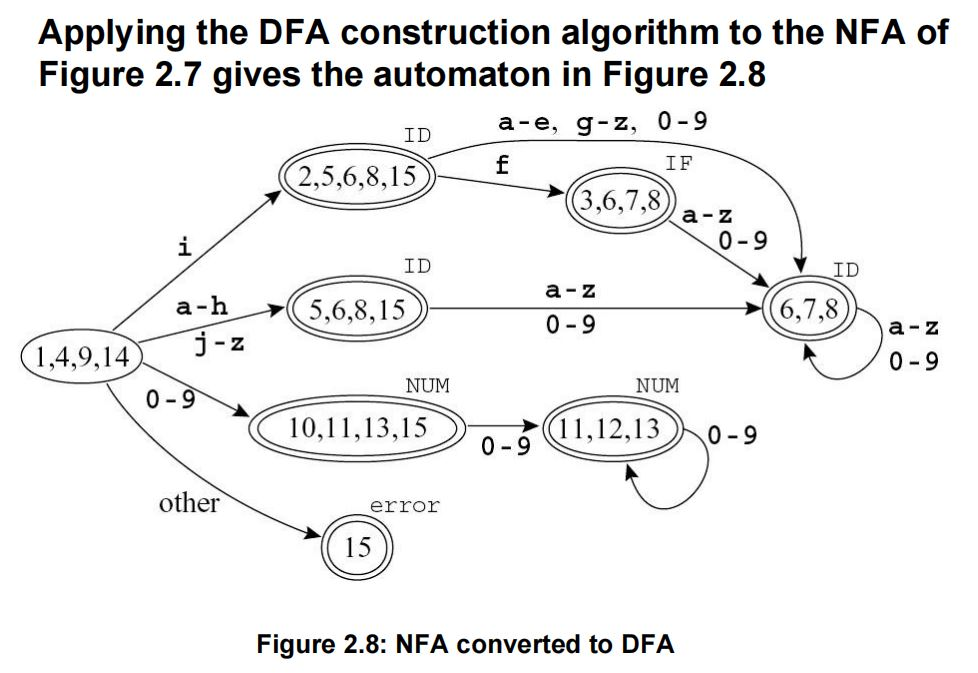
5.等价状态的判别与删除
（1）等价状态的判别（不是必要条件）
·均为终止状态，或均为非终止状态。
·对于任意一个字符，输出的状态转移都是相同的。
（2）举例
·上图中，10, 11, 13, 15和11, 12, 13是等价状态。
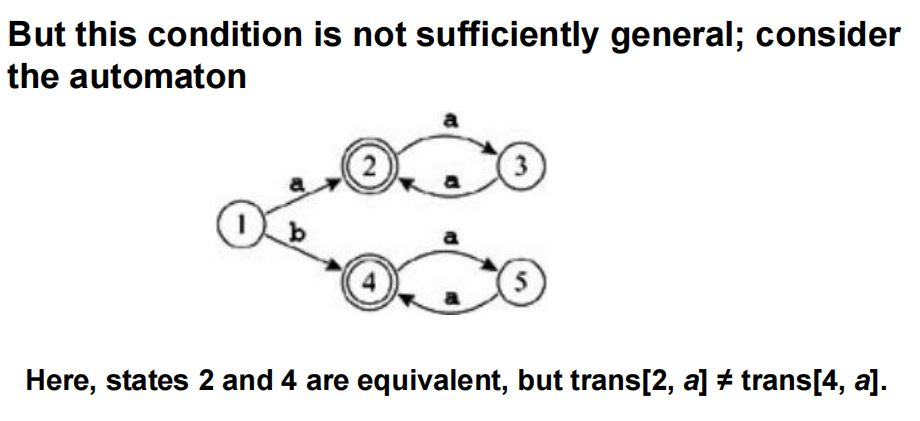
第三讲 语法分析
一、上下文无关文法
1.【定义1】句子
·由若干终结符(terminal)组成的序列。
2.【定义2】歧义文法
·若同一序列的token能产生至少\(2\)个语法分析树，则称该文法是歧义的。
3.运算符优先级与树结构的关系
·离树根越远，则优先级越高，运算越先被执行。
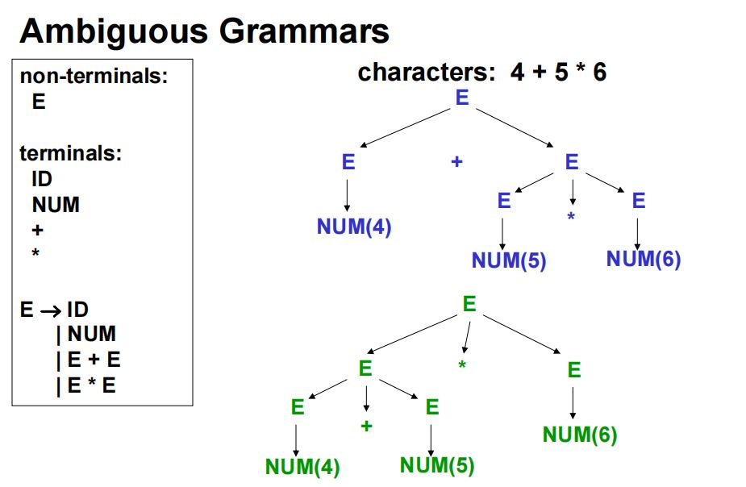
4.歧义文法改造为非歧义文法
·下图通过文法改造，使得加减法、乘除法的优先级得以区分。
·这一方法并非万能方法。
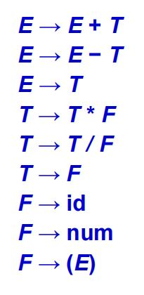
5.实际的非歧义做法
·对于语法分析器，增加规则说明，以表明遇到某些规则时，优先执行哪一种。
6.显式文件结束符\(\$\)
·设原有的起始符为\(S\)，则新增起始符\(S'\)，及转换规则\(S' \rightarrow S\$\)。
二、预测分析(Predictive Parsing)
1.分类：LL(k), LR(k)，即最左推导、最右推导。
·\(k\)：代表look ahead\(k\)个符号。
·向前看的符号数\(k\)越多，则分析器的预测能力越强。
2.递归下降分析法(Recursive Descent Parsing)
（1）简介
·自顶向下的分析方法
·特点：简单、高效
·能分析大多数文法，但并非全部。
（2）LL(1)文法
·从左到右分析、最左推导、向前看\(1\)个符号。
·每一条规则左侧的非终结符，相当于一个“函数名”。
·每一条规则右侧的导出，相当于“函数体”。
【例1】给定文法规则 进行递归下降分析
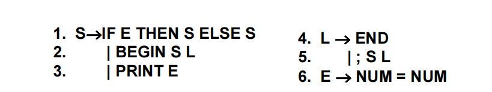
①罗列终结符(Tokens)
·NUM | IF | THEN | ELSE | BEGIN | END | PRINT |
SEMI | EQ
②实现
final int IF=1, THEN=2, ELSE=3, BEGIN=4, END=5, PRINT=6, SEMI=7, NUM=8, EQ=9;
int tok = getToken();
void advance() {tok=getToken();}
void eat(int t) {if (tok==t) advance(); else error();}
void S( ) {switch(tok) {
case IF: eat(IF); E(); eat(THEN); S(); eat(ELSE); S(); break;
case BEGIN: eat(BEGIN); S( ); L( ); break;
case PRINT: eat(PRINT); E( ); break;
default: error();
void L( ) {switch(tok) {
case END: eat(END); break;
case SEMI: eat(SEMI); S( ); L(); break;
default: error();
}}
void E( ) { eat(NUM); eat(EQ); eat(NUM); }
}}
③左递归、嵌套问题
·S -> L -> S的调用，产生间接左递归问题。
④预测分析的问题：仅当一个token足以预测所有信息时，\(k = 1\)的预测分析才完全有效。
下列概念有助于解决左递归问题。
3.【定义3】可空集(Nullable Set)
·基本定义：若\(X := \epsilon\)，则\(X\)是可空的非终结符。
·递归定义：若\(X := ABC\cdots\)，导出的所有非终结符\(ABC \cdots\)都是可空的，则\(X\)也是可空的。
·迭代计算可空集。
4.【定义4】第一集(First Set)
·基本定义：若\(T\)为终结符，则\(First(T) = \{T\}\)。
·递归定义：若\(X := ABC \cdots\)，则\(First(X) = First(A) \cup First(B) \cup \cdots\)
·\(First(X) = \empty\)，若\(X\)是可空的非终结符。
5.【定义5】跟随集(Follow Set)
·基本定义：一开始，假设各个\(Follow(X) = \empty\)，通过迭代计算不断扩充\(Follow(X)\)。
·递归定义：若\(Y := s_1 X s_2\)，则\(Follow(X) = Follow(X) \cup Follow(s_2)\)。
【例2】计算下列非终结符是否可空，求其First Set, Follow Set。
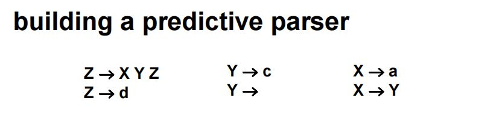
（1）\(Y\)可空\(\rightarrow X\)可空，但\(Z\)不可为空，原因是\(Z \rightarrow XYZ, Z \rightarrow d\)，即非终结符\(Z\)消失时，必定产生一个终结符\(d\)。
（2）\(First(x) = \{a\}, First(y) = \{ c \}, First(z) = \{ d \} \xRightarrow{X \rightarrow Y} First(x) = \{a, c\} \xRightarrow{Z \rightarrow XYD}First(z) = \{a, c, d\}\)
（3）\(Follow(z) = \{ \$ \}, Follow(Y) = Follow(Y) \cup Follow(Z) = \{a, c, d\}, Follow(X) = Follow(X) \cup Follow(Y) \cup Follow(Z) = \{a, c, d\}\)
（4）建立表格
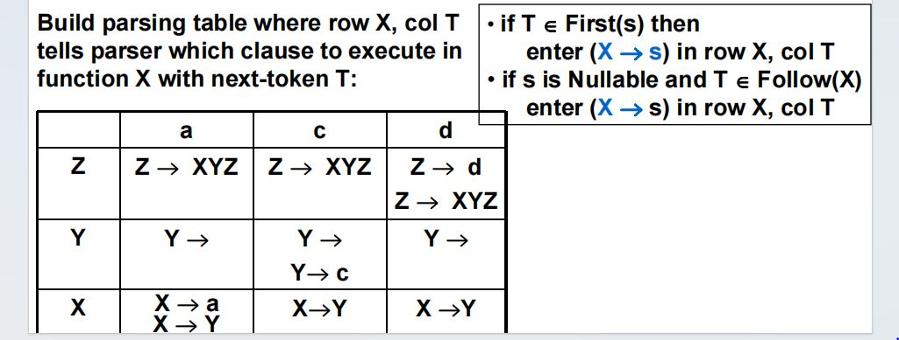
6.建立预测分析表(predictive parsing table)
·该表可以为空，但同一格中不能出现两个符号。
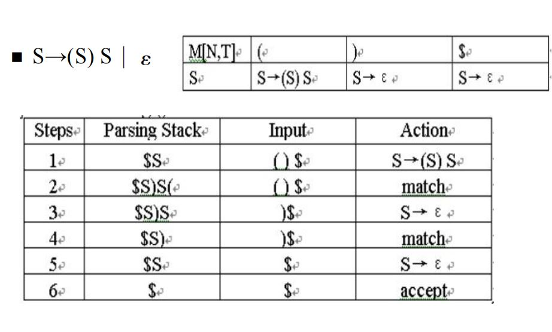
·上图为已经构造好的预测分析表，现根据预测分析表进行分析。
·一开始，栈中仅有\(S\)。
·看到输入的\((\)，弹出\(S\)，对于\(S \rightarrow(S)S\)涉及的\(4\)个符号，进行从左到右顺序入栈。
·接下来，对\((\)进行eat操作，匹配。
·读入\()\)，首先令栈顶\(S \rightarrow \epsilon\)，然后eat\()\)，匹配。
·最后，令栈中仅剩的\(S \rightarrow \epsilon\)，即完成文法分析。
7.左递归的消除
（1）举例
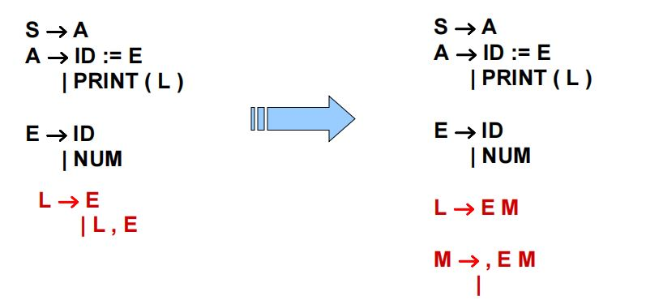
·\(L \rightarrow E | LE\)，产生左递归。
·上式改为\(L \rightarrow EM, M \rightarrow ,EM | \epsilon\)，左递归改为右递归，即可令文法分析器进行正常分析。
（2）一般的左递归转换方法
·对于\(E \rightarrow E + T | E\)，可以改造为\(E \rightarrow TE', E' \rightarrow + TE' | \epsilon\)
8.左公因子的提取(Left Factoring)
（1）举例
·原始文法：S ::= IF E THEN S ELSE S, S ::= IF E THEN S
·上述文法面临选择问题，只有知道ELSE时，才能确定应选择哪一文法。
·进行左公因子提取，改造文法：S ::= IF E THEN S X
X ::= ELSE S | ε。
·思想：延迟决策时间，尽量晚地进行选择。
（2）模板
·原始文法：\(A \rightarrow \alpha B | \alpha C\)
·改造为：\(A \rightarrow \alpha A', A' \rightarrow B | C\)。
9.错误恢复(Error Recovery)
·目的：纠正错误状态，继续正常进行分析。
void T( ) { switch (tok) {
case ID:
case NUM:
case LPAREN: F( ); Tprime( ); break;
default: error!
}}
·之前定义的First Set, Follow Set有利于进行错误恢复。
int Tprime_follow [ ] = {PLUS, RPAREN, EOF};
void Tprime( ) { switch (tok) {
case PLUS: break;
case TIMES: eat(TIMES); F(); Tprime(); break;
case RPAREN: break;
case EOF: break;
default: print("expected +, *, right-paren, or end-of-file");
skipto(Tprime_follow);
}}
·错误原因：没有遇到T'能直接生成的4种符号。
·错误恢复方法：skipto(Tprime_follow)函数，只要T'后的符号位于T'的follow set中，都可以继续正常执行语法分析。此时，直接跳转到T'后符号的分析函数之中。